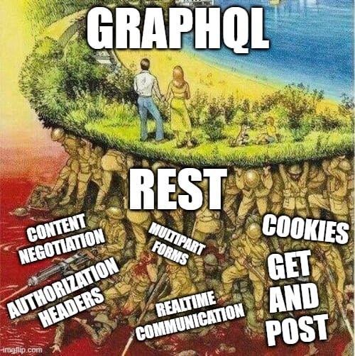
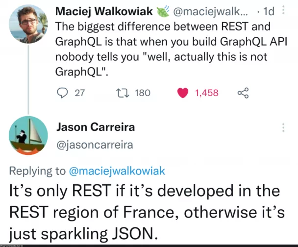
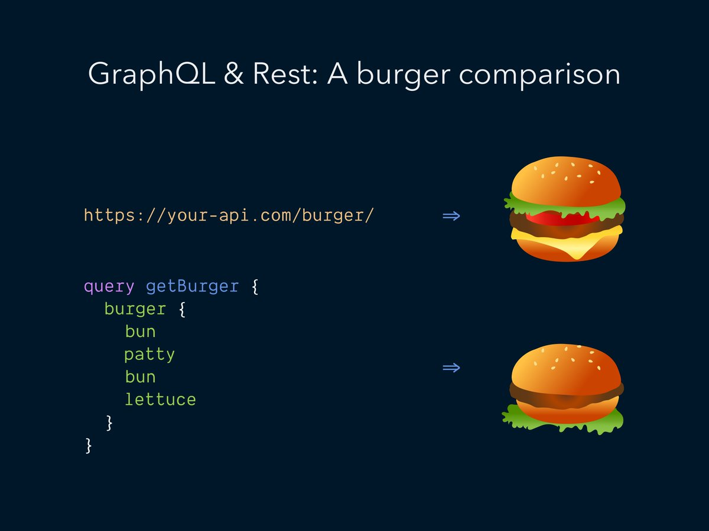

Full-stack Development [OGI03r]
11. GraphQL
11.1
GraphQL Intro
REST API vs. GraphQL

GraphQL
- GraphQL is an open-source data query and manipulation language for APIs and a server-side runtime engine.
- A GraphQL API is on the same level as a REST API, not tied to any specific database systems or programming language
-
History
- Released as open source in 2015 by Facebook
- Moved to non-profit Linux foundation since 2018
- Many public APIs do have a GraphQL interface
-
Basic mechanism
- The server exposes a single endpoint, typically over HTTP(S)
- The client can specify exactly what data it needs in a query containing the shape of the data
- The server returns a result that mirrors the shape of the query, typically as JSON
Type System
- GraphQL APIs are organized in terms of types and fields
- = the schema definition
- The Query is also part of it
- Example query and type system:
What's in the GraphQL standard?
- Type system
- Queries
- Mutations: queries that modify server-side data
- Validation: use type system to determine whether query is valid
- Resolvers: functions on the server retrieving the data
- Introspection: query the schema itself!
-
Best practices
- On authorization, pagination, caching, …
- Avoid versioning! Add capabilities in new types and fields
- Nullability: in case of errors return null, which supports partial results
Are you already a fan of GraphQL?
 … or not?
11.2
Let's dive into the standard
Queries: fields
- Example query and result with fields
- The
namefield of theheroobject is aString
{
hero {
name
# Queries can have comments!
friends {
name
}
}
}{
"data": {
"hero": {
"name": "R2-D2",
"friends": [
{
"name": "Luke Skywalker"
},
{
"name": "Han Solo"
},
{
"name": "Leia Organa"
}
]
}
}
}Queries: arguments
- Like query parameters in REST
- Fields can have arguments too (is of the Enumeration type here)
{
human(id: "1000") {
name
height(unit: FOOT)
}
}{
"data": {
"human": {
"name": "Luke Skywalker",
"height": 5.6430448
}
}
}Queries: aliases
- Aliases allow to query the same field multiple times
{
empireHero: hero(episode: EMPIRE) {
name
}
jediHero: hero(episode: JEDI) {
name
}
}{
"data": {
"empireHero": {
"name": "Luke Skywalker"
},
"jediHero": {
"name": "R2-D2"
}
}
}Queries: operation name
queryis the operation typeHeroNameAndFriendsis the operation name
query HeroNameAndFriends {
hero {
name
friends {
name
}
}
}{
"data": {
"hero": {
"name": "R2-D2",
"friends": [
{
"name": "Luke Skywalker"
},
{
"name": "Han Solo"
},
{
"name": "Leia Organa"
}
]
}
}
}Queries: variables
- Pass dynamic values in a separate dictionary
- In the client code, don't concatenate user-supplied values
Episode!would mean the variable is non-null and required
query HeroNameAndFriends($episode: Episode) {
hero(episode: $episode) {
name
friends {
name
}
}
}
# separate dictionary:
{
"episode": "JEDI"
}{
"data": {
"hero": {
"name": "R2-D2",
"friends": [
{
"name": "Luke Skywalker"
},
{
"name": "Han Solo"
},
{
"name": "Leia Organa"
}
]
}
}
}Mutations
- Call your query a mutation when it modifies server-side data
- Often, the new state of the object is asked for and returned
mutation CreateReviewForEpisode($ep: Episode!, $review: ReviewInput!) {
createReview(episode: $ep, review: $review) {
stars
commentary
}
}
# separate dictionary:
{
"ep": "JEDI",
"review": {
"stars": 5,
"commentary": "This is a great movie!"
}
}{
"data": {
"createReview": {
"stars": 5,
"commentary": "This is a great movie!"
}
}
}Type system (1)
-
Object types and fields
type Character { name: String! appearsIn: [Episode!]! }CharacterandEpisodeare object types- Fields
nameandappearsIncan appear in any query on aCharacter Stringis a built-in scalar type, just likeInt,Float,BooleanandID[]means "array of"!means "non-nullable"
Type system (2)
-
Arguments
type Starship { id: ID! name: String! length(unit: LengthUnit = METER): Float }- all arguments are named
METERis the default value
-
Enums
enum Episode { NEWHOPE EMPIRE JEDI }
Type system (3)
-
Query (and mutation) types
Example query enabled by this type:type Query { hero(episode: Episode): Character droid(id: ID!): Droid }query { hero { name } droid(id: "2000") { name } }
Want more?
11.3
GraphQL with Laravel
rebing/graphql-laravel
- Popular package: rebing/graphql-laravel
-
Installation
composer require rebing/graphql-laravel php artisan vendor:publish --provider="Rebing\GraphQL\GraphQLServiceProvider"
Approach
-
Generate your classes with commands like:
php artisan make:graphql:query ExampleQuery php artisan make:graphql:type ExampleType -
Register them in
config/graphql.php'schemas' => [ 'default' => [ 'query' => [ \App\GraphQL\Queries\ExampleQuery::class, ], 'mutation' => [ \App\GraphQL\Queries\ExampleMutation::class, ], 'types' => [ \App\GraphQL\Queries\ExampleType::class, \App\GraphQL\Queries\ExampleEnum::class, ], ], 'user' => [ 'query' => [ App\GraphQL\Queries\ProfileQuery::class ], 'mutation' => [ ], 'types' => [ ], 'middleware' => ['auth'], // Which HTTP methods to support; must be given in UPPERCASE! 'method' => ['GET', 'POST'], 'execution_middleware' => [ \Rebing\GraphQL\Support\ExecutionMiddleware\UnusedVariablesMiddleware::class, ], ], ],
Let's go
- Let's write our first type and query
- Don't forget to optimize the Eloquent query by select & eager loading
- Let's define and use enums
- Let's create a mutation
- Want some form of object as argument? Then you need an input object
- Did you know you can use Laravel's pagination?